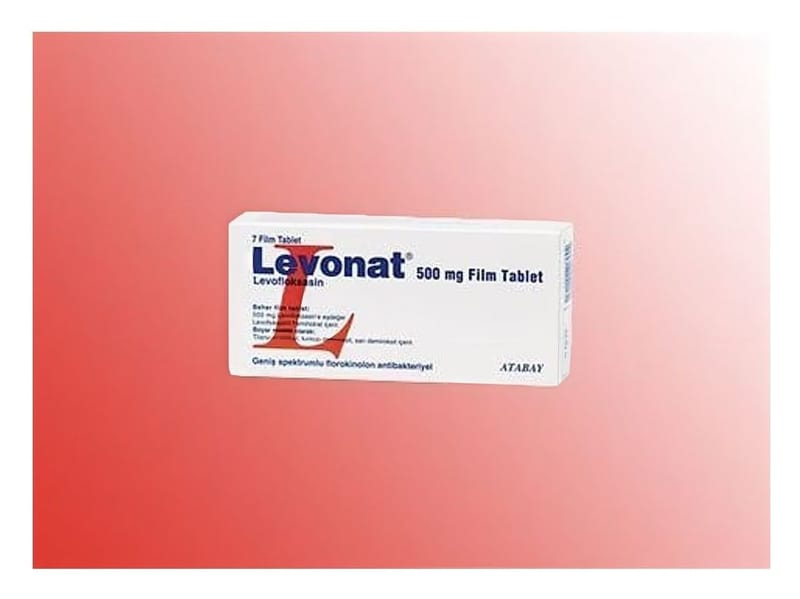

Levonat 500 mg Film Tablet, 7 Adet

Ne için kullanılır
KT · Bölüm 1• LEVONAT tablet ağızdan alınır. İlacınızın bir kutusu içinde her biri 500 mg levofloksasin içeren 7 adet film kaplı tablet bulunur. Doz ayarlamasını kolaylaştırmak için tablet çentiklidir. • LEVONAT antibiyotik adı verilen ilaç grubuna dahildir ve bir “kinolon” grubu antibiyotiktir. • LEVONAT vücutta enfeksiyona sebep olan bakterileri öldürür. • LEVONAT: - Sinüslerin - Akciğerlerin (uzun süreli solunum problemleri veya pnömonisi olan kişilerde), - Böbrek veya mesane dahil olmak üzere idrar yolunun, - Prostat bezinin (uzun süreli enfeksiyonları), - Yumuşak dokunun (kaslar dahil deri ve deri altının) enfeksiyonlarının tedavisinde kullanılabilir. LEVONAT, bazı özel durumlarda, şarbona neden olan bakterilere maruz kaldıktan sonra şarbon adı verilen bir akciğer hastalığına yakalanma veya bu hastalığın kötüleşme olasılığını azaltmak için kullanılabilir.